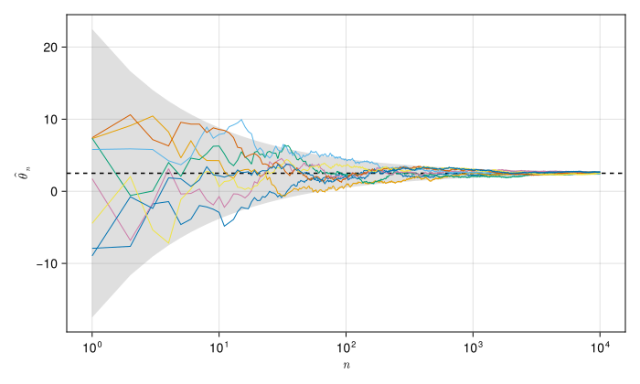
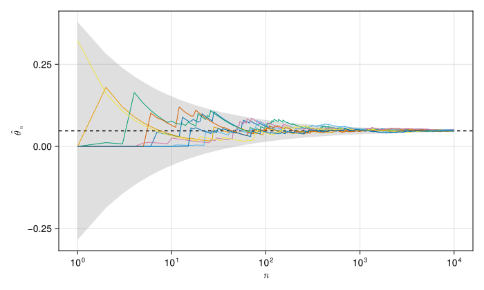

Lab 1: Monte Carlo convergence
In this lab, you will set up the required software stack for this course. You will also get to explore Monte Carlo estimation by simulation.
Like every lab you will encounter in this course, this code works out of the box. Your goal is not to build working code; it is to play around in this sandbox to build understanding.
In the future, you should check the Software Reference page when you need a reminder on how to use these tools.
Objectives
By the end of this lab, you will be able to:
- Install Julia, Quarto, and Claude Code on your own computer, then run and edit a notebook.
- Estimate a quantity by simulation and compare to the true answer.
- Describe what makes a Monte Carlo estimate converge quickly or slowly.
Why Julia
This course uses Julia. Alan Edelman explains why better than I can, in MIT’s Introduction to Computational Thinking. His essay, in full:
Superficially, many programming languages are very similar. “Showoffs” will compare functional programming vs imperative programming. Others will compare compiled languages vs dynamic languages. I will avoid such fancy terms in this little essay, preferring to provide this course’s pedagogical viewpoint.
Generally speaking beginning programmers should learn to create “arrays” write “for loops”, “conditionals”, “comparisons”, express mathematical formulas, etc. So why Julia at a time when Python seems to be the language of teaching, and Java and C++ so prominent in the corporate world?
As you might imagine, we believe Julia is special. Oh you will still have the nitty gritty of when to use a bracket and a comma. You might have strong opinions as to whether arrays should begin with 0 or 1 (joke: some say it’s time to compromise and use ½.) Getting past these irrelevant issues, you will begin to experience one by one what makes Julia so very special. For starters, a language that runs fast is more fun. We can have you try things that would just be so slow in other languages it would be boring. We also think you will start to notice how natural Julia is, how it feels like the mathematics, and how flexible it can be.
Getting to see the true value of fancy terms like multiple dispatch, strong typing, generic programming, and composable software will take a little longer, but stick with us, and you too will see why Julia is so very special.
Setup
Attempt these steps, in order, before lab on Friday. Some steps may take some time for your computer to run and install things, so start early! If you run into challenges we can debug in class, but if you don’t attempt setup ahead of time, you’ll spend Friday staring at your screen.
GitHub account
Create a free account at github.com if you do not have one. Use your Rice email so you qualify for the Student Developer Pack. You need an account before you can make your own copy of a lab.
Editor
Use VSCodium; VS Code works identically. Other editors can work, but you are on your own for support. Install it now and leave it closed; you will open it from GitHub Desktop in a moment.
To change the theme, font size, and key bindings, see Personalize VS Code. The settings are the same in VSCodium.
GitHub Desktop
Install GitHub Desktop and sign in with the account you just made. You will use it to get the lab, to open it in your editor, and to review what changed before you commit.
Get the lab
Each lab is a template repository, and Canvas has the link for the week. For this lab it is Create your copy of Lab 1.
Open that link, name the repository CEVE543-F26-<your netID>, and click “Create repository”. GitHub copies the lab into your own account. You can make this lab public or private, but if you make it private please add jdossgollin so I can view your code.
Then, in GitHub Desktop, choose File > Clone Repository, find your new copy under the GitHub.com tab, and pick where to put it.
Do not put the folder inside OneDrive, Google Drive, iCloud, or any other synced folder, because sync services corrupt Git repositories. A folder like ~/CEVE-543/ works well.
Open the lab in your editor
In GitHub Desktop, with the lab repository selected, choose Repository > Open in Visual Studio Code.
This opens the whole lab folder. Opening a single file instead leaves the editor with no folder, so its terminal starts somewhere else and every command below looks for the lab in the wrong place. The title bar should show the lab folder’s name.
Open the built-in terminal with View > Terminal. Every command in this lab runs in that panel, so you never need to open a separate terminal application. It runs zsh on macOS, bash on Linux, and PowerShell on Windows. A terminal command is one you type at that prompt. A Julia command is one you type at the julia> prompt you get after starting Julia. That prompt is the REPL, short for read-eval-print loop: you type one expression, Julia works it out and prints the answer, then waits for the next one. It remembers everything you have defined so far in that session, which is why the order you run things in matters. Every command below says which of the two it is.
Running code in the Julia extension describes the REPL that lives inside the editor, and the Julia manual’s REPL chapter is the full reference.
Julia
Install Julia with juliaup. It manages Julia versions and makes later upgrades easy.
Then pin the version this course uses, again in the terminal:
To verify, close the terminal panel, open a new one with View > Terminal, and run julia --version in it. You should see julia version 1.12.x.
Quarto
Install Quarto from the Get Started page. Quarto includes Typst, so you do not need to install anything else for PDFs. To verify, run quarto check in the terminal.
Claude Code
Install Claude Code with the setup instructions. Then run claude in the terminal and log in. The exercises below and the Friday labs use it, per the AI policy.
Editor extensions
Install two extensions from the Extensions pane (Cmd+Shift+X / Ctrl+Shift+X): Julia (by julialang) and Quarto. VSCodium installs them from Open VSX instead of the Microsoft marketplace; the extensions are the same. The REPL and plot pane come from the Julia extension, and the Run Cell buttons come from the Quarto extension.
Install them last, because each extension looks for the program it wraps when it starts. Julia and Quarto are both installed now, so restart the editor and the extensions will find them.
Optional: JuliaMono
The JuliaMono font renders Julia’s Unicode operators cleanly in the editor and REPL.
Verify everything
In the same terminal panel, run:
The first command installs the packages this lab needs, and the second executes the whole notebook. The first run downloads and precompiles everything and can take 15 minutes or more. If the render finishes without errors, your setup works end to end.
How to work through a lab
Open index.qmd and run the cells one at a time, from the top. Each {julia} cell has a Run Cell button above it, and Shift+Enter runs the current cell and moves to the next. The Julia extension starts a REPL the first time you do this and sends every cell to it.
Output lands in three places. Values appear inline at the end of the cell and in the REPL panel. Plots open in the plot pane beside the editor. Printed text, warnings, and errors appear in the REPL panel, so look there when a cell seems to produce nothing.
The REPL is fast because it keeps what you have already computed, so you can change one line and rerun one cell without waiting for the ones above it. It also keeps state the document does not record: a cell can work because of a variable you defined and later deleted, and you will not find out until you render.
Rendering, with quarto render or quarto preview, runs the whole document from the top in a fresh process. That catches the hidden state, and it produces the document you turn in. It is slower, it reruns everything each pass, and an error partway through is harder to trace to one line.
Work in the REPL, and render to check that the notebook stands on its own. Render at least once before you turn the lab in.
If the code starts referring to variables you have edited or deleted, restart the REPL (Command Palette > “Julia: Restart REPL”) and run from the top.
The Software Reference covers all of this in more detail, including what to check when something breaks.
Lab activity
The cell below activates this lab’s own package environment, installs what it lists, and loads the packages. Every lab starts with the same cell. It also creates the random number generator that the rest of the lab draws from, seeded so a fresh render gives the same figures every time.
Running a cell twice draws new numbers from that generator. Render the whole document to get the figures back.
Estimating a mean by simulation
This is the estimator from lecture with \(g\) the identity, so \(\theta = E[X]\) and
\[ \hat\theta_n = \frac{1}{n} \sum_{i=1}^{n} X_i , \qquad \mathrm{SE}(\hat\theta_n) = \frac{\mathrm{sd}(X)}{\sqrt{n}} . \]
running_mean gives \(\hat\theta_n\) at every \(n\), and convergence_axis! draws the \(\pm 2\,\mathrm{SE}\) envelope in gray, \(\theta\) as a dashed line, and one line per simulation on top.
running_mean(x) = cumsum(x) ./ eachindex(x)
function convergence_axis!(ax, rng, dist, n_draws, n_sims)
draws = 1:n_draws
mu, sigma = mean(dist), std(dist)
if isfinite(mu) && isfinite(sigma)
se = sigma ./ sqrt.(draws)
band!(ax, draws, mu .- 2 .* se, mu .+ 2 .* se; color=(:gray, 0.25))
hlines!(ax, mu; color=:black, linestyle=:dash)
end
for _ in 1:n_sims
lines!(ax, draws, running_mean(rand(rng, dist, n_draws)); linewidth=1)
end
ax.xscale = log10
return ax
end- 1
-
A one-line function definition, the same as
function running_mean(x) ... end. The dot in./means elementwise: divide each running total by its own \(n\). Julia calls this broadcasting, and you will see it on almost every operator here.eachindex(x)is1, 2, 3, ...up to the length ofx. - 2
-
The
!at the end of a name is a convention Julia does not enforce: it warns you that the function changes one of its arguments, here the axisaxit draws onto. - 3
-
1:n_drawsis a range, the values of \(n\) on the horizontal axis: it describes the numbers without storing them, so this costs nothing even whenn_drawsis a million. - 4
-
Julia returns both values at once and assigns them in one line, the same as Python’s
a, b = f(), g(). - 5
-
meanandstdreturnNaNfor a distribution that has neither, so this tests whether an envelope exists.&&isand, and it skips the second test when the first is already false.
Start with a normal distribution, whose mean and standard deviation you already know.
- 1
-
How long each simulation runs, and how many independent simulations to draw. The underscore in
10_000is a readability separator that Julia ignores. - 2
-
Normal(2.5, 10)builds an object describing a distribution;randdraws from it.

The lines wander at small \(n\), then settle into the envelope and stay there. How large \(n\) has to be depends on the spread of \(X\) relative to \(\theta\) itself, the \(\mathrm{CV}\).
A function of the draws
Now take \(g\) from lecture: \(X = H\) is an annual peak water level in feet, \(d\) turns a level into the fraction of a building’s value destroyed, and \(\theta = E[d(H)]\). A depth-damage curve is itself an estimate, so the code gives it a multiplicative error and draws over the level and the error together.
- 1
- The generalized extreme value distribution is one example of a distribution used for extremes; treat it as a black box this week, since what its location, scale, and shape mean is module 2. The shape controls how heavy its tail is.
- 2
- A multiplicative error with median 1, so it scales damage up or down rather than shifting it.
- 3
-
Three dotted operators, all broadcasting over the whole vector at once: apply
damage_fractionto every level, multiply each by its own error draw, then clamp each result between 0 and 1.
The clamp is why this cannot be split into two one-dimensional integrals, so you have to estimate it by sampling. It also means \(\mathrm{sd}(d(H))\) has no closed form to put in the envelope, so estimate it from a large sample.
years with no damage = 0.826
E[damage] = 0.0475
CV = 3.5mu_hat, sigma_hat = mean(reference), std(reference)
draws = 1:n_draws
se = sigma_hat ./ sqrt.(draws)
fig2 = Figure(; size=(700, 420))
ax2 = Axis(fig2[1, 1]; xlabel=L"n", ylabel=L"\hat{\theta}_n", xscale=log10)
band!(ax2, draws, mu_hat .- 2 .* se, mu_hat .+ 2 .* se; color=(:gray, 0.25))
hlines!(ax2, mu_hat; color=:black, linestyle=:dash)
for _ in 1:n_sims
lines!(ax2, draws, running_mean(simulate_damage(rng, n_draws)); linewidth=1)
end
fig2
Exercises
You are strongly encouraged to use an AI tool like Claude Code to help you write code and check syntax, though ultimately your code is your own (see our AI policy).
Write your answers in the Your answer block under each exercise, replacing the italic placeholder.
Convergence of different distributions
Change dist in Figure 1 and rerun it. Try at least LogNormal(1.5, 0.8), GeneralizedExtremeValue(4.0, 0.8, 0.15), and Cauchy(1, 0.25).
- Report the mean, standard deviation, and coefficient of variation for each. State which you think will converge fastest.
- Implement each above and plot them. What do you notice? Were you right?
- What happens to your estimate of the mean of your Cauchy distribution as
n_drawsgets huge (\(10^6\)).
Your answer.
Answer here
Change the hazard and the damage
Edit hazard, damage_fraction, or damage_error, then rerun the reference cell and Figure 2, in that order. The printed CV comes from reference, so Figure 2 keeps the old envelope until that cell runs again.
- Raise the damage threshold from 5.5 feet to 6.5 feet. Report what happens to the fraction of years with no damage and to \(\mathrm{CV}\).
- Widen
damage_errorfromLogNormal(0, 0.25)toLogNormal(0, 0.6). Does the estimate get harder or easier, and which source of randomness dominates?
Your answer.
Answer here
Restyle the figure
Make at least three deliberate changes to Figure 1: colors, a legend, axis labels, annotation of the envelope. Ask Claude if you like, but read what it edits and rerun the cell after each change.
Your answer.
Answer here
Turning it in
This lab is due on Canvas one week after the Friday session that starts it.
Check that every Your answer block is filled in.
Render the notebook to a PDF. In the terminal, from the lab folder, run:
This writes
index.pdfbeside the notebook. It runs the whole notebook from the top in a fresh process, so it also confirms your work does not depend on leftover REPL state.Commit and push your work, with GitHub Desktop or by asking Claude to commit and push.
Upload
index.pdfto the Lab 1 assignment on Canvas.Paste the link to your repository in the same Canvas submission.
If the render fails and you cannot fix it, upload what you have and say where it broke. A lab that does not render is worth more to me than a lab you did not turn in.
Note what broke, what Claude got wrong, and what you had to fix by hand, and bring it to the next session.